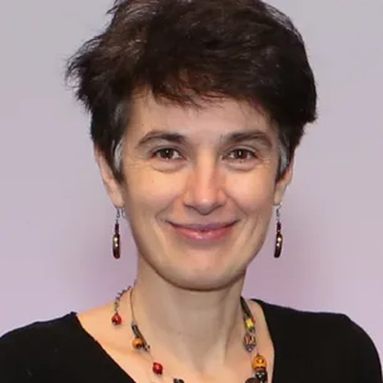
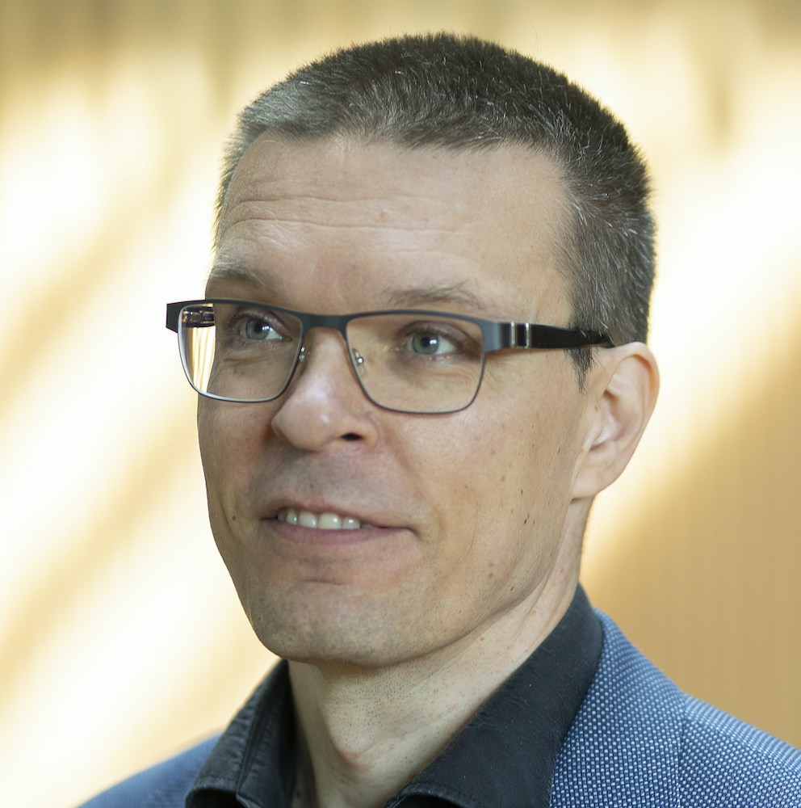
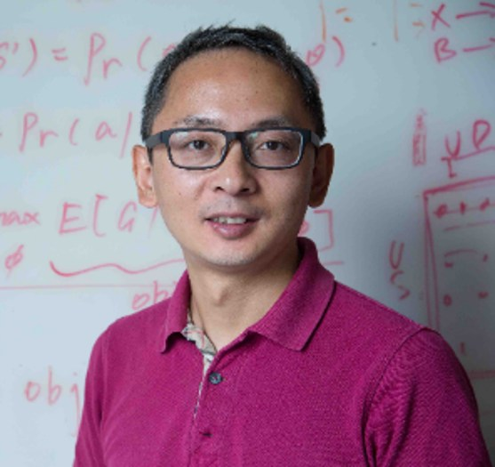
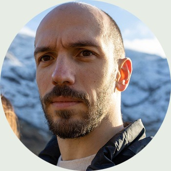

Category A · Up to 4 pages
Original Papers
Submit an anonymised paper of up to 4 pages using the workshop LaTeX template. Preliminary results and emerging ideas are welcome.
ELLIS UnConference 2026 · Paris
About the workshop
Scientific discovery involves generating hypotheses, choosing experiments, analysing results and checking conclusions. Teams of AI agents could combine complementary expertise and challenge each other’s reasoning—but they also introduce communication costs, duplicated effort and the risk of false consensus.
This workshop brings together researchers in multi-agent learning, human–AI collaboration and AI for Science to ask when agent teams deliver meaningful scientific gains. We will connect learning and coordination with shared memory, experimental design and rigorous evaluation under matched resource budgets.
Call for submissions
Submissions are now closed. Thank you to all authors who submitted — see the accepted papers.
We invite double-blind, non-archival submissions on multi-agent AI for scientific discovery. Papers are welcome in either of the following categories:
Category A · Up to 4 pages
Submit an anonymised paper of up to 4 pages using the workshop LaTeX template. Preliminary results and emerging ideas are welcome.
Category B · Original format
Submit an anonymised paper prepared for a top ML/AI venue, whether accepted, under review or previously submitted, in its original format and length.
Topics of interest
We welcome work on multi-agent AI systems for scientific discovery, including learning and coordination, shared knowledge, hypothesis generation and experimental design, human–AI collaboration, and evaluating when agent teams help.
Applications across the sciences are welcome, such as life sciences and healthcare, chemistry and materials science, physics and astronomy, and earth and climate science.
The submission site is now closed.
Submitting a contribution does not register you for the event. Presenters must also register through ELLIS. Places are limited, so we recommend that authors of accepted submissions register soon after notification.

University of Cambridge
Professor of Machine Learning, AI and Medicine
TalkOpen-ended hypothesis hunting

University of Manchester · Aalto University
Professor of Machine Learning; Founding Director, ELLIS Institute Finland

University College London
Professor of Computer Science
TalkLarge Discovery Models: Towards Autonomous Scientific Discovery

The programme combines invited talks, flash talks for accepted papers and a moderated panel. Times below are Paris time on 8 December.
| Time | Session |
|---|---|
| 10:30–10:35 | |
| 10:35–10:55 | Mihaela van der SchaarUniversity of Cambridge · Professor of Machine Learning, AI and Medicine Open-ended hypothesis hunting |
| 10:55–11:15 | Samuel KaskiUniversity of Manchester and Aalto University · Professor of Machine Learning; Founding Director, ELLIS Institute Finland Title to be announced |
| 11:15–11:25 | Flash talks for accepted papers |
| 11:25–11:45 | Jun WangUniversity College London · Professor of Computer Science Large Discovery Models: Towards Autonomous Scientific Discovery |
| 11:45–12:05 | |
| 12:05–12:30 | Panel discussion and future researchPanelists Mihaela van der Schaar · Samuel Kaski · Jun Wang · Zafeirios Fountas · Yulan He Moderator Yali Du |
Presenting authors are underlined
Kewei Zhu, Peyman Z. Moghadam
Niall Jeffrey
Ismail Ben Seddik
Diya Wadhwa
Panel discussion
What demonstrates a coordination benefit under matched compute and experiment budgets, beyond simply running more attempts?
Which roles need specialisation? How can shared memory, evidence provenance and productive disagreement support a team?
When should agents seek expert input, and how should people guide hypotheses, experimental decisions and unexpected findings?
How should benchmarks assess validity, novelty and reproducibility while exposing error propagation and false consensus?
Join the conversation
Part of the ELLIS UnConference 2026.
Registration is managed by the main event.
Contact Yali Du at yali.du@kcl.ac.uk.